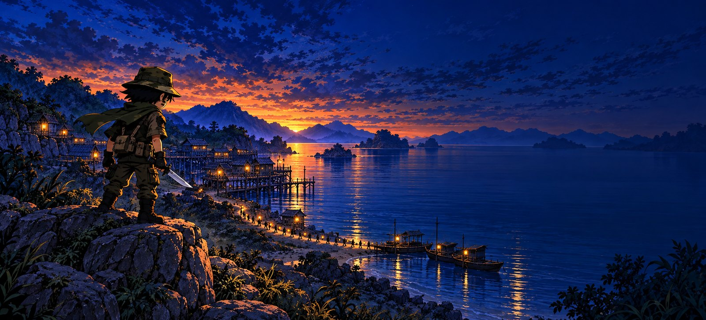
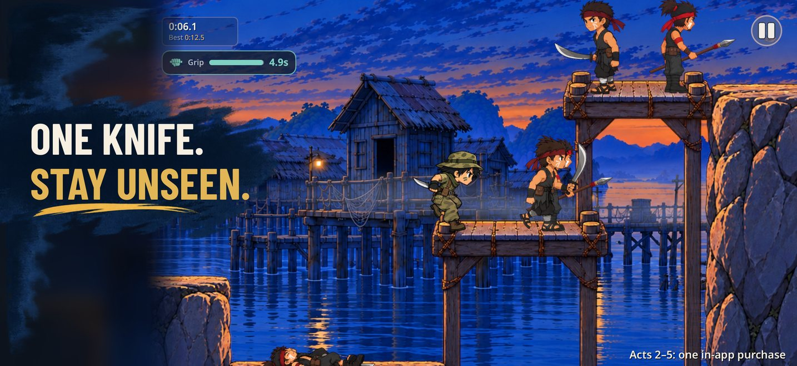
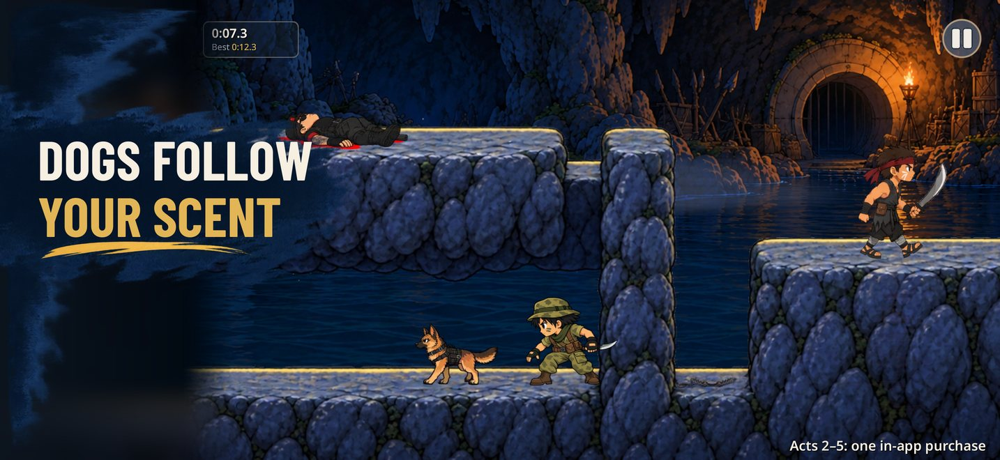
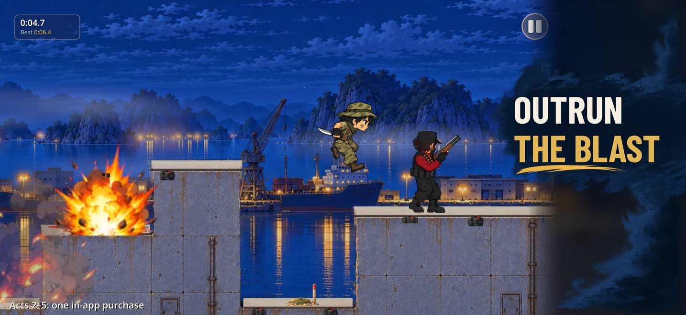

Knife Ops: Stealth Commando
41 people. One knife. One road.
A hand-painted 2D stealth platformer for iPhone and iPad. Kite has one knife and one night to clear the road so 41 villagers can reach the boats before midnight. A single shot would wake the whole bay.
Get it on the App StoreFeatures
- 40 handmade levels in five acts, from the Wind Cliffs to the Bay Fortress at night
- Stealth, not firepower: learn the patrols and strike from behind
- Guard dogs that follow your scent, traps, a blast-front chase and a timed escape
- Every level has a silent rank-S route you can watch as a replay
- Touch controls made for phones and tablets; gamepad and keyboard too
- English voice acting with subtitles in 20 languages
- Game Center achievements and a total-time leaderboard; progress syncs with iCloud
- Plays fully offline. No ads.
Act 1 is free. One in-app purchase unlocks Acts 2–5.
Screenshots



© 2026 MH Fusion Interactive